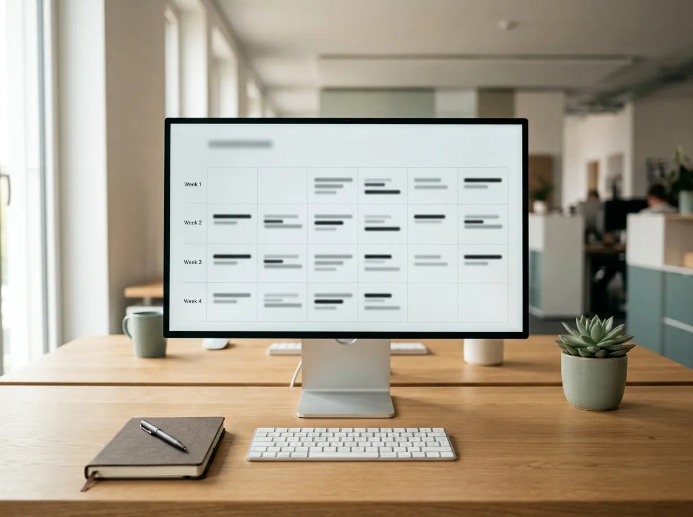

Das erhältst du, wenn du am 02.09. live dabei bist:
Das Live-Webinar: KI ist Chefsache (90 Minuten)
(LIVE)90 Minuten Live-Demo mit Stefanie und Tim: Onboarding und Führung als System, Claude vs. ChatGPT im direkten Vergleich und Prompts, die vor deinen Augen von schwammig zu brauchbar werden. Mit Zeit für deine Fragen.

Bonus 1: Prompt-Vorlage Onboarding-Checkliste
(PROMPT)Der Prompt, mit dem du in 5 Minuten eine komplette Einarbeitungs-Checkliste für jede Position in deinem Betrieb erstellst – statt zwei Stunden zu tippen.

Bonus 2: Prompt-Vorlage 30-Tage-Plan
Der Prompt für einen klaren Tag-für-Tag-Einarbeitungsplan: was dein neuer Mitarbeiter in Woche 1 lernt, was in Woche 2 – bis er selbstständig arbeitet.

Bonus 3: Prompt-Vorlage Arbeitsanweisungen
Der Prompt, der dein Kopfwissen in klare Schritt-für-Schritt-Anweisungen verwandelt – damit du nicht mehr jeden Handgriff persönlich erklären musst.
Bonus 4: Die Telegram-Community
Nach dem Webinar ist nicht Schluss: In unserer Telegram-Community tauschst du dich mit anderen Geschäftsführern aus und stellst deine Fragen rund um KI im Betrieb.
… und Zeit für deine Fragen